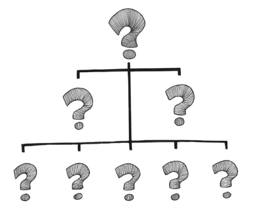
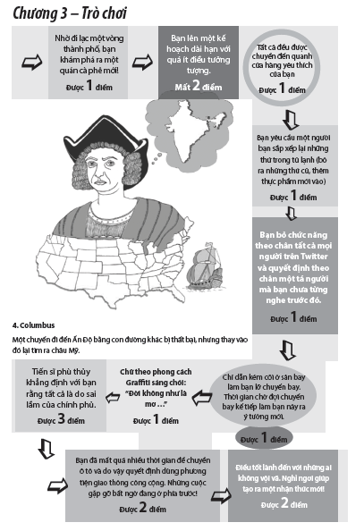

3. Sự Hỗn Loạn Trong Doanh Nghiệp

 Động vật thích nghi với sự thay đổi
Động vật thích nghi với sự thay đổi
Trong một cuộc khảo sát năm 2010 được thực hiện bởi IBM với hơn 1.500 Giám Đốc Điều Hành trên toàn thế giới, có hai từ được bật ra nhiều lần, đó là “sự phức tạp” và “tính không chắc chắn”. Đây là tiêu chuẩn “bình thường mới” dành cho các công ty trên khắp thế giới trong thập kỷ vừa qua. Nếu trước đó, thị trường là thị trường nội địa, ổn định và có thể dự đoán được, thì nay chúng lại biến động, phức tạp hơn và chịu sự cạnh tranh đến từ những nơi ít ngờ nhất. Trung tâm tư vấn cho các nhà quản lý cấp cao của Deloitte (Deloitte’s Centre for the Edge) đã chỉ ra rằng khả năng sinh lợi tính trên tổng tài sản của các công ty Mỹ đã giảm từ mức trung bình chỉ hơn 4,5% vào giữa những năm 1960 xuống dưới 0,5% vào những năm 2000. 1 Câu chuyện được lặp lại ở châu Âu, nơi các công ty độc quyền cấp quốc gia và các công ty đầu ngành đã trở thành nạn nhân của các thị trường toàn cầu hóa và tính tự mãn. Chắc chắn là có một số người khao khát được trở về với quá khứ, khi mà lợi nhuận thu được dễ dàng và tương lai là chắc chắn. Những người khác thì thích nghi với kỷ nguyên mới trong đó các doanh nghiệp phải luôn tính đến yếu tố không chắc chắn. “Thời gian không còn nhiều nữa. Chúng ta thường nói rằng, ‘gắng đợi đến khi cuộc khủng hoảng này qua đi và sau đó mọi thứ sẽ trở lại bình thường’, nhưng điều đó sẽ không bao giờ xảy ra. Chúng ta phải trở thành ‘những động vật thích nghi với sự thay đổi’.” 2 , trích lời của một Giám Đốc Điều Hành được phỏng vấn trong cuộc khảo sát của IBM. Chương này sẽ xem tính không chắc chắn như là một phần trong đời sống hàng ngày của một công ty và nói về các khía cạnh tích cực không thể lường trước của tính không chắc chắn. Chúng ta sẽ bắt đầu với yếu tố sống còn của các tổ chức, yếu tố đổi mới.
Doanh nghiệp phải luôn tính đến yếu tố không chắc chắn
Tia sáng
Lars thích bóng đá. Ông là nhân viên bán hàng cho một công ty y tế. Vào những ngày nghỉ, ông thường chơi đá bóng với một số bạn bè thân thiết trên sân bóng gần đó ở vùng ngoại ô Stockholm. Sau đó, vào mùa thu năm 1984, ông được săn đón để trở thành Giám Đốc Điều Hành của một công ty y tế nhỏ có trụ sở tại Gothenburg, và do đó ông buộc phải từ bỏ thú vui yêu thích của mình. Bất kỳ ai đã trải qua đều có thể biết được rằng việc chuyển đến một thị trấn mới là một sự cố gắng trong đơn độc, và Lars cũng không phải là ngoại lệ. Để chống lại sự cô đơn và tìm một hoạt động thể chất nào đó thay cho bóng đá, ông bắt đầu chạy bộ. Rất nhiều.
Công ty y tế mà Lars đang lãnh đạo chuyên về các sản phẩm dành cho bệnh nhân sử dụng hậu môn giả – những người bị loại bỏ một phần ruột già và thay thế bằng một túi nhựa. Bạn có thể tưởng tượng, người được phẫu thuật gắn hậu môn giả thường bị kỳ thị, do đó, túi nhựa bắt buộc phải thật kín đáo và thoải mái. Trong nhiều năm qua, bệnh nhân thậm chí không được sử dụng túi nhựa mà chỉ là một hộp kim loại phải súc rửa vài lần mỗi ngày. Sau đó, người ta sử dụng túi dùng một lần và một vấn đề khác cần phải giải quyết là làm thế nào để giữ túi nằm đúng chỗ trong người bệnh nhân. Điều này được giải quyết bằng cách dùng một chất keo dày, ướt và dính, nhưng nó lại làm cho bệnh nhân bị phát ban và rộp da rất khó chịu. Sản phẩm của công ty của Lars nhằm khắc phục điểm này. Họ đã sáng chế một loại băng dính mới có đệm, có thể hấp thu độ ẩm và giúp da thông thoáng dễ thở – một giải pháp giúp các bệnh nhân cảm thấy thoải mái hơn.
Việc thường chạy bộ khiến chân của Lars bị đau. Những đôi giày chạy bộ trong những năm đầu thập kỷ 80 thì không thoải mái tiện nghi bằng những đôi giày ngày nay nên Lars nhanh chóng bị phồng da rất khó chịu. Không đành từ bỏ niềm đam mê mới của mình và là một người rất thích mày mò, Lars bắt đầu nghĩ về một giải pháp giúp chân mình phục hồi. Một buổi chiều, khi đang ngồi một mình trong căn hộ, ông đã lấy vài miếng băng dính dùng trong túi hậu môn giả rồi cắt chúng thành hình dạng phù hợp với gót chân mình – chỗ bị phồng da nhiều nhất. Ông ra ngoài chạy thử và đã có thể hoàn thành cự ly thường lệ mà không gặp bất kỳ rắc rối nào ở chân. Rất phấn khởi, ông trở về nhà và bắt đầu phát triển ý tưởng mới của mình. Vài tuần sau đó, khi ngồi cạnh một bác sĩ quân y trên chuyến tàu đến Stockholm, Lars đã nói với vị bác sĩ về ý tưởng này và họ cùng quyết định thử nghiệm nó trên một số binh sĩ dự kiến sẽ tham gia một cuộc hành quân mười dặm vào tuần sau. Các kết quả rất khả quan. Nhóm đối chứng – gồm những người chỉ mang vớ ngắn cổ trong đôi ủng da nặng nề – phàn nàn rằng họ bị đau chân và phồng da. Các binh sĩ mang miếng băng đệm của Lars thì ổn và cho rằng đó là cuộc hành quân khỏe nhất mà họ từng trải qua.
Lars đã tình cờ có một cống hiến đáng kể. Một giải pháp đơn giản cho một vấn đề quen thuộc hàng ngày.
Phần còn lại là lịch sử.
Vào năm 1985, công ty bắt đầu bán miếng đệm Compeed TM để ngăn ngừa rộp da trên chân, khuỷu tay, bàn tay và ngón tay, và sản phẩm đã phát triển trở thành một trong những nhãn hiệu y tế thành công nhất cho đến nay. Ngày nay, Lars phát biểu: “Niềm vui lớn nhất tôi có được từ việc này là khi tôi và các con tôi đi du lịch đến một nơi xa xôi và lạ lẫm, tôi có thể tìm và chỉ cho chúng thấy sản phẩm Compeed TM được bán trong các hiệu thuốc địa phương – ý tưởng này đến với tôi khi tôi tự mày mò trong căn hộ nhỏ của mình ở Gothenburg.” 3
Cơ hội kinh doanh bất ngờ
Câu chuyện của Lars và Compeed TM đã minh họa cho nguồn gốc khá bí ẩn của những ý tưởng kinh doanh thành công. Các công ty chi hàng tỷ đô la vào việc nghiên cứu và phát triển, chỉ để nhận ra rằng các giải pháp và sản phẩm mới mang tính đột phá lại đến một cách ngẫu nhiên. Trích dẫn lời của tiểu thuyết gia Samuel Butler: “Tất cả những phát minh mà thế giới có không phải được tìm ra bởi mục đích ban đầu khi nghiên cứu, cũng không phải nhờ trí tuệ, mà là nhờ những người phát minh đã may mắn đụng phải chúng do nhầm lẫn hay sơ suất.” 4
Ngài Peter Drucker quá cố – biệt danh của “bậc thầy của các bậc thầy” về quản trị – thậm chí đã cho rằng một trong những nguồn ý tưởng hiệu quả nhất của sự đổi mới là sự bất ngờ không thể lường trước. Ông phân biệt ra ba loại: thành công bất ngờ, thất bại bất ngờ và một sự kiện bên ngoài bất ngờ. Drucker phát biểu: “Bất ngờ là một triệu chứng, nhưng là triệu chứng của cái gì? Yếu tố nền tảng có thể không gì khác hơn ngoài sự giới hạn về tầm nhìn, kiến thức và hiểu biết của chúng ta.” 5 Ông cho rằng thách thức chính là nhận ra nhanh chóng thứ mà bạn đang xem xét là gì và làm cho nó phát triển thay vì chống lại nó – về bản chất là làm cho điều bất ngờ trở thành trợ thủ đắc lực cho doanh nghiệp của bạn.
Câu chuyện doanh nghiệp
Phát minh là một cố gắng phức tạp, thậm chí là lộn xộn. Mặt khác, điều hành doanh nghiệp hàng ngày lại là vấn đề về tính rõ ràng. Biết những gì cần phải làm, bởi ai, khi nào và ở đâu. Cây bút mảng kinh doanh Joan Magretta so sánh mô hình kinh doanh với một câu chuyện nhằm lý giải cách thức doanh nghiệp hoạt động. Một mô hình kinh doanh tốt – như một câu chuyện hay – nên có “các nhân vật được mô tả chính xác, các động cơ thúc đẩy hợp lý và cốt truyện có giá trị sâu sắc”. 6 Hãy nghĩ đến những điểm tương đồng giữa cách thức hoạt động của doanh nghiệp và bộ não. Cũng như chúng ta xác định cuộc sống bằng một quỹ đạo tuyến tính, các công ty xác định mình bằng các mô hình kinh doanh và đôi khi không nhận ra những sự việc xảy ra bên ngoài phạm vi được tạo ra bởi quỹ đạo tuyến tính của nó. Quỹ đạo tuyến tính có thể khiến bạn lạc lối bằng nhiều cách. Ví dụ như, bạn có thể cho rằng các cơ hội đang nổi lên không phù hợp với mô hình kinh doanh của bạn và bỏ qua chúng – Lars quyết định gắn bó với việc bán băng dính dùng cho túi hậu môn giả và bỏ qua các cơ hội kinh doanh mới tiềm năng. Một khía cạnh khác cần xem xét đến là các tình huống được vạch ra bởi mô hình kinh doanh không phải lúc nào cũng xảy ra theo đúng kịch bản như chúng ta vẫn thường thấy đối với kịch bản phim và tiểu thuyết. Hai điểm khác biệt quan trọng nhất, trong thế giới kinh doanh là các nhân vật mới luôn luôn xuất hiện và các điều kiện luôn luôn biến đổi.
- Các nhân vật mới luôn luôn xuất hiện
Trong những năm cuối thập kỷ 90, đã có một số công cụ tìm kiếm đang được thế giới sử dụng, bao gồm Lycos, Altavista và Yahoo. Tuy nhiên, mười năm tiếp theo, thế giới bị thống trị bởi một công cụ lúc đó hoàn toàn chưa được biết tới, đến từ đâu đó – hay chính xác hơn, đến từ tài năng của hai thành viên sáng lập ở thung lũng Silicon. Backrub được thành lập vào năm 1998, nhưng những người sáng lập không thích cái tên này nên họ đổi sang tên Whatbox. Cảm thấy rằng phát âm của tên này có vẻ quá giống với một trang web khiêu dâm, họ đặt tên cho nó theo cách viết sai chính tả của con số googol (số 1 và theo sau là 100 số 0). 7 Câu chuyện như thế này được lặp lại suốt. Các ngành công nghiệp bị chen ngang bởi những đối thủ cạnh tranh không lường trước được cùng những công nghệ mới. Tinh thần đổi mới của doanh nghiệp tạo ra một môi trường đầu tư sôi động nhưng không có chuyện gì để kể. Hãy tưởng tượng câu chuyện “Cô bé quàng khăn đỏ” với một nhân vật mới được kể trên mỗi trang sách khác. Mặc dù vậy, nhiều công ty vẫn giữ mô hình kinh doanh quen thuộc và hoạch định tương lai theo một mô hình tuyến tính được định trước. Họ tăng dần dần ngân quỹ được lập dựa trên ngân quỹ năm trước để rồi thấy ngạc nhiên thay bởi kế hoạch của họ lại bị lỗi thời khi đối mặt với thực tế đang rình nấp ở góc quanh tiếp theo.
- Các điều kiện luôn luôn biến đổi
Trong những năm đầu của thập kỷ 1990, công ty viễn thông khổng lồ AT & T của Mỹ đã tung ra một loạt các mẫu quảng cáo nhằm làm khách hàng hồ hởi với triển vọng về một công nghệ tiên tiến trong tương lai. Câu khẩu hiệu hứa hẹn là “Bạn sẽ”, và chiến dịch quảng cáo quay hình tất cả những cảnh như trong truyện khoa học viễn tưởng thường thấy, chẳng hạn như hệ thống điện thoại có hình ảnh và các công cụ dẫn đường trong ô tô. Một trong những mẩu quảng cáo có cảnh một người đàn ông nằm trên một chiếc ghế xếp ở bãi biển chộp lấy tài liệu từ một máy in di động với câu thuyết minh “Bạn đã bao giờ gửi fax từ bãi biển chưa? Bạn sẽ!” Điều mà AT & T không tính đến là tính chất không thể lường trước của sự đổi mới. Khi chúng ta đưa ra dự đoán về công nghệ trong tương lai, khó khăn của chúng ta là phải nhìn xa hơn những điều mà máy móc ngày nay có thể thực hiện. Vào cuối thế kỷ mười tám, một tính toán sai lầm khét tiếng đã xảy ra tại New York. Người ta đã được cảnh báo rằng nếu họ không thay đổi cách sống, đi lại và tiêu dùng thì toàn bộ hòn đảo Manhattan sẽ bị bao phủ bởi một lớp phân ngựa dày ba mét (“Hãy nhìn tất cả lũ ngựa chúng ta sử dụng ngày nay và tưởng tượng xem chúng ta phải cần đến bao nhiêu con nữa nếu dân số ta cứ tiếp tục tăng như từ xưa đến nay”). 8 Đổi mới là một yếu tố khó nắm bắt như vậy bởi vì người ta có xu hướng cho rằng mọi thứ là không thể cho đến khi chúng trở nên có thể. Điều trên hầu như đúng trong mọi trường hợp, từ máy bay siêu thanh cho đến việc chữa bệnh sốt rét. Tương lai không phải là một thực thể cố định nơi mà có thể áp dụng cùng những quy tắc giống như hiện tại.
Người ta có xu hướng cho rằng mọi thứ là không thể cho đến khi chúng trở nên có thể
Chúng ta cũng thường dự đoán sai nhu cầu của khách hàng trong tương lai. Toàn bộ các ngành công nghiệp được xây dựng quanh một giả định về hành vi khách hàng, chỉ sụp đổ khi những người mua hàng hay thay đổi kia bắt đầu theo đuổi điều lớn lao kế tiếp. Thật ý nghĩa khi từ khách hàng trong tiếng Thổ Nhĩ Kỳ là müşteri và được phát âm là mystery, nghĩa là bí ẩn.
Hai lực lượng biến đổi gồm nhân vật mới và điều kiện mới cùng hành động nhằm không ngừng làm các công ty đi chệch hướng trong công cuộc tìm kiếm lợi nhuận. Tuy nhiên, căn nguyên của hai lực lượng trên là giống nhau và chỉ có một. Đó là tư duy của con người.
Đổi mới mang tính may mắn
Cách thức tình cờ và ngẫu nhiên mà những ý tưởng mới được hình thành hoàn toàn trái ngược với quá trình đổi mới có trình tự được những công ty lớn thiết lập. Thậm chí bạn có thể lập luận rằng đây là hai cách tiếp cận khác nhau và mâu thuẫn với nhau. Một bên là cá nhân mày mò với ít hoặc không có nguồn lực. Bên còn lại là môi trường tập thể của các tập đoàn lớn và các chương trình ưu đãi của chính phủ. Cả hai bên đều hy vọng có một khoảnh khắc may mắn và tình cờ hiếm hoi khi các yếu tố khớp đúng chỗ và một ý tưởng mới, đầy hứa hẹn xuất hiện. Tính chất may mắn, tình cờ đóng một vai trò lớn không mấy dễ chịu trong sự đổi mới. Hãy nghĩ về trường hợp của Compeed TM , hoặc trường hợp khi Per Gessle sáng tác “The Look” do bấm ngẫu nhiên trên các phím đàn. Hãy nghĩ về các miếng giấy ghi chú, nylon, thuốc penicillin, thuốc Viagra và nhiều sản phẩm đột phá khác. Tất cả đều là kết quả của những sự cố may mắn như những chiếc đĩa nuôi cấy vi khuẩn bị bỏ quên hay các dược phẩm điều trị bệnh tim nhưng bị thất bại. Nguồn gốc các ý tưởng hiếm khi là những kế hoạch và quy trình định sẵn mà là những sơ suất, dự đoán sai và những thử nghiệm không đạt mục tiêu.
Nguồn gốc các ý tưởng hiếm khi là những kế hoạch và quy trình mà là những sơ suất, dự đoán sai và những thử nghiệm không đạt mục tiêu
“Hết bất ngờ có thể sẽ là chấm hết của khoa học”, nhà sử học Robert Friedel đã viết như vậy trong bài luận năm 2001 có tựa đề “Tính may mắn và tình cờ không phải là ngẫu nhiên”. Rủi thay, trong suốt chiều dài lịch sử, nhiều người đã cố gắng chống lại tính không thể kiểm soát được của sự tiến bộ. Từ những người hành nghề y khoa ngoài vòng pháp luật thuộc Giáo Hội và giới tăng lữ đến lý thuyết quản trị hiện đại đều cố miêu tả từng câu chuyện kinh doanh thành công như là một kết quả được dự kiến trước từ hàng loạt quyết định được xem xét cẩn trọng. Henry Mintzberg, một giáo sư về kinh doanh, có quan điểm ngược lại và lập luận rằng những gì chúng ta gọi là chiến lược thực sự chỉ là “một khuôn mẫu trong một dòng hành động hỗn độn”. 9 Tương tự, các mô hình kinh tế thành công trên khắp thế giới – như trường hợp phần mềm ở thung lũng Silicon hay phim ảnh ở Bollywood – chỉ là tình cờ, nhà kinh tế học đoạt giải Nobel Paul Krugman phát biểu rằng: “Vị thế cụ thể của một ngành công nghiệp vi mô nào đó là vô định ở diện rộng và phụ thuộc vào lịch sử. Nhưng khi một mô hình mẫu của tính chuyên môn hóa đã được thiết lập, vì bất cứ lý do gì, mô hình đó sẽ ‘được giữ nguyên’ bởi những lợi ích tích lũy từ hoạt động thương mại.” 10
Một trong những cuộc chiến ý tưởng khốc liệt nhất trong thế kỷ qua là cuộc chiến giữa những người theo Thuyết sáng tạo, là những người tin rằng có một Đấng tạo hóa đã tạo ra tất cả mọi sinh vật sống dựa trên một loại kế hoạch chính xác nào đó, và những người theo Thuyết Darwin, là những người lập luận rằng không có một Đấng tạo hóa như vậy. Tiến hóa là một quá trình vô nghĩa trong đó không có động lực hay ý nghĩa ẩn phía sau. Các loài đấu tranh để tồn tại và thích nghi với điều kiện mới. Một số thành công theo thời gian trong khi một số khác thất bại. Chúng ta có thể áp dụng hai quan điểm khác biệt này vào lĩnh vực kinh doanh và chính trị. Trong kinh doanh, một số người có niềm tin mạnh mẽ rằng kinh doanh có một mục tiêu chung, gắn kết và lâu dài trong khi một số khác xem hoạt động kinh tế như là một dòng các ý tưởng và hành động ngẫu nhiên, vô tổ chức. Trong chính trị, một số người tin rằng một chính quyền mạnh, có tầm nhìn có thể định hình các quốc gia và thành phố, định hướng chúng theo một hướng nào đó – hãy nhìn vào Trung Quốc hay Dubai. Những người khác lại tiếp cận trên lập trường tự do kinh doanh và lập luận rằng các quốc gia và thành phố sẽ thực hiện tốt nhất chức năng của nó khi không bị ai quản lý và tất cả mọi người đều chịu trách nhiệm về mình.
Dù là tình cờ hay được hoạch định, ý tưởng có thể được định nghĩa là sự va chạm giữa bộ não với vấn đề, giữa vật liệu với công nghệ khác nhau, và giữa con người với nhau. Một trong những định nghĩa phổ biến nhất về tính sáng tạo chính là sự kết hợp hai ý tưởng quen thuộc thành một điều mới – chẳng hạn như, ý tưởng về máy bộ đàm kết hợp với điện thoại và kết quả là ta có chiếc điện thoại di động. Người sáng lập ra Apple, Steve Jobs từng tuyên bố hùng hồn rằng “Sáng tạo là kết nối mọi thứ lại với nhau”. Va chạm có xu hướng xảy ra trong các khu vực đông dân và các thành phố lớn là ví dụ tiêu biểu cho điều này. Khu vực đô thị là sự kết hợp dễ phát sinh mâu thuẫn của những nền tảng, dân tộc, văn hóa, giá trị và lý tưởng khác nhau. Nhà kinh tế học đô thị Jane Jacobs nói rằng “[ngay cả] công việc chúng ta xem như là phục vụ cho cuộc sống nông thôn cũng có nguồn gốc ở thành phố... nó được xây dựng trực tiếp trên nền kinh tế thành phố và công việc thành phố”. 11 Vượt lên trên phạm vi địa lý, World Wide Web là một sự gia tốc sáng tạo khác, giúp con người dễ dàng nhìn vào tâm trí của những người hoàn toàn xa lạ, liếc qua biên giới của một nước khác hoặc nhìn trộm vào phía sau những cánh cửa đóng kín của các công ty và các phòng thí nghiệm. Tính kết nối của Internet và sự gia tăng dân số thế giới không chỉ nuôi dưỡng mà còn thúc đẩy sự đổi mới. Chính ở những siêu đô thị như Tokyo, New York hay Mumbai – những chảo lửa không thể lường trước, chúng ta sẽ chứng kiến sự nổi lên của nhiều xu hướng, trào lưu và ý tưởng mới trong các thập kỷ sắp tới. Không có cách nào để dự đoán những tuyệt tác sáng tạo này sẽ cho ra kết quả gì.
Ý tưởng có thể được định nghĩa là sự va chạm
Công ty là những thực thể đóng băng theo thời gian
Bây giờ hãy so sánh nguồn gốc sống động, mang tính thử nghiệm của các ý tưởng với chỗ làm việc buồn tẻ, ngăn nắp nơi mà nhiều người trong chúng ta đã hao phí những tháng ngày của mình để làm việc kiếm sống. Điều gì đã xảy ra trong quá trình đó?
Thầy giáo vật lý ở trung học của tôi có thể đã có câu trả lời: trong buổi học đầu tiên tôi học với thầy, thầy đã bưng đến một chồng lớn toàn giấy và ném chúng xuống sàn nhà. Thầy nói: “Tự nhiên đấu tranh cho sự mất trật tự”. Nếu không có bàn tay con người sắp xếp các tờ giấy lại với nhau và tạo ra chỗ để cất chúng, thì chúng sẽ biến mất trong gió hoặc hư hỏng do bị ẩm ướt.
Ta có thể thấy khuynh hướng sự mất trật tự này ở bất cứ nơi nào trong tự nhiên. Tuy nhiên, con người được trang bị kém và không muốn phụ thuộc vào Mẹ Thiên Nhiên. Chúng ta tạo ra các thói quen, cấu trúc và ý nghĩa để bảo vệ chúng ta khỏi việc trở thành đống giấy vụn. Đó chính là điều xảy ra khi những ý tưởng được củng cố thành một doanh nghiệp và công ty của một cá nhân được phát triển thành một gã khổng lồ đa quốc gia. Bất cứ ai đã từng làm việc cho một công ty ngay từ khi mới bắt đầu và người sáng lập ra công ty đều thấu hiểu được cuộc đấu tranh để tồn tại ác liệt như thế nào. Các quyết định được đưa ra tức thời, được truyền đạt kém và thay đổi một cách bất chợt. Nó giống như bị ném vào thùng xe rồi đi viễn du một chuyến. Các chủ doanh nghiệp tạo ra những nhà quản lý tồi. Nếu một công ty muốn tồn tại lâu hơn người sáng lập ra nó, công ty đó cần phải quan liêu hóa. Cảm giác hồi hộp của người đi tiên phong khai phá được thay thế bởi sức hút của việc điều hành một doanh nghiệp nghiêm chỉnh với mục tiêu là phục vụ khách hàng trong khi vẫn giữ cho nhân viên và chủ sở hữu doanh nghiệp hài lòng.
Điều này khiến các công ty dễ bị tổn thương khi đối mặt với điều bất ngờ. Với sự xuất hiện của các cấu trúc bài bản chính thức, loại ngẫu hứng đặc trưng của một doanh nghiệp mới khởi sự theo đó sẽ bị giảm sút. Đây là điều đã được Ray Ozzie nhận thấy khi ông đảm nhiệm vai trò Kiến trúc sư trưởng về phần mềm của Microsoft. Thay thế người sáng lập Bill Gates, Ozzie nhận ra rằng Microsoft đã là một công ty tuyệt vời. Hoạt động tốt, các sản phẩm lớn, lợi nhuận cao, các chu kỳ phát triển sản phẩm được quản lý tốt, v.v. Nhưng tất cả chỉ là hoạt động quá tốt một chút mà thôi, và đó là khi Ozzie xây dựng nên tầm nhìn của mình: “Microsoft [phải] suy nghĩ và hoạt động ở mức cao hơn một doanh nghiệp mới khởi sự.” 12 Một nhà điều hành quản lý rủi ro mà tôi phỏng vấn tại một công ty viễn thông lớn đã mô tả một sự xung đột văn hóa tương tự trong công ty của cô ta: “Tất cả công việc của tôi là cố gắng khám phá ra những rủi ro trước khi chúng trở thành một gánh nặng trách nhiệm cho công ty. Đó là công việc phải luôn luôn đặt ra câu hỏi ‘sẽ thế nào nếu?’... Trong công ty này, người ta không quen với việc tiếp cận bằng cách đặt câu hỏi tưởng tượng như vậy nên họ chỉ cần ném một đống tiền lớn vào các vấn đề để chúng biến mất.”
Để hiểu những gì xảy ra trong quá trình chuyển đổi giữa một công ty mới khởi sự, linh hoạt nhiệt huyết với người anh của nó, lớn tuổi hơn, khôn ngoan hơn, ít sáng tạo hơn, ta hãy xem xem điều gì sẽ xảy ra khi người ta quyết định bắt đầu tập thể dục nhiều hơn nữa. Một hướng dẫn viên thể dục tôi gặp ở Luân Đôn đã miêu tả điều đó bằng cách vẽ một đường cong ban đầu dốc đứng, sau đó bớt dốc và trở nên gần như phẳng: “Những người bắt đầu chương trình tập thể dục đạt được lợi ích rất lớn trong những tuần đầu tiên khi họ lấy lại sức chịu đựng bị mất, bỏ đi trọng lượng thừa và thêm một chút bắp thịt ở tay và chân. Kế tiếp có điều gì đó xảy ra. Cơ thể không phản ứng nhiều với việc tập luyện nữa và chúng ta khi đó xem việc tập thể dục để giảm bớt trọng lượng là một vòng xoay quen thuộc buồn tẻ hàng ngày. Chúng ta lâm vào “trạng thái chững lại”. Trạng thái này cũng là vấn đề mà các công ty trưởng thành phải đối mặt, nhưng các nhà kinh tế thích gọi nó là “suất sinh lợi biên giảm dần”. Nhà quản lý bậc thầy Peter Drucker lý giải rằng “nhà quản lý gặp khó khăn khi phải chấp nhận tính chất không thể lường trước [ở những bước ngoặt thay đổi của các sự việc, bởi lẽ] tất cả chúng ta có xu hướng tin rằng bất cứ điều gì đã tồn tại trong một thời gian tương đối lâu thì phải là ‘bình thường’ và cứ tiếp tục ‘mãi mãi’.” 13
Giáo sư Don Sull ở trường Kinh Doanh London đã phát triển ý tưởng về các công ty đã có kinh niên hoạt động lên một bước cao hơn và đặt ra khái niệm “quán tính chủ động” để mô tả tại sao một số công ty không thích ứng với các điều kiện luôn biến đổi để rồi bị tàn lụi. “Quán tính chủ động là tình trạng làm điều mà bạn đã luôn làm rồi – và làm tốt – nhưng bỏ lỡ những bước ngoặt trên đường đi. Không phải điều bạn làm đã khiến bạn gặp phải rắc rối; rắc rối là khi bạn cứ tiếp tục làm điều mà bạn vẫn luôn làm.” 14
Tôi ghi nhận điều này khi tôi tư vấn cho một chuỗi rạp chiếu phim ở vùng Bắc Âu. Lượng khán giả hầu như không biến động trong thập kỷ vừa qua, do đó, rạp chiếu phim cũng như các nhà phân phối phim cần phải đưa ra những phương thức sáng tạo và mới mẻ nhằm thu hút khán giả nhiều hơn. Chúng tôi bắt đầu thảo luận về những phương thức lý thú, mới mẻ để cuốn hút khán giả đến rạp. Là cha của một lũ trẻ, tôi nhận thấy rằng ý tưởng của mình thường xoay quanh những thứ đại loại như “Suất phim thoải mái vào sáng thứ bảy dành cho trẻ em”, hoặc dành chín mươi phút điểm nhanh qua những bộ phim được đánh giá cao nhất trong hai năm vừa qua, vì trách nhiệm làm cha đôi lúc không cho phép tôi đến rạp xem phim. Ngạc nhiên thay, không khí trong phòng chùng xuống từng phút một, hầu hết các lãnh đạo cấp cao đều nhún vai hay ho khan khi tôi chia sẻ ý tưởng của mình. Sau đó, phó chủ tịch phát triển kinh doanh hắng giọng và nói: “Magnus, trước khi chúng ta bắt đầu thảo luận về những ý tưởng mới, bạn cần hiểu rằng ngành của chúng ta rất đặc biệt. Nó không giống những ngành khác. Nó có rất nhiều các quy tắc và quy định và khách hàng của ta có xu hướng bảo thủ.”
Tôi không trách cứ công ty đã bác bỏ những ý tưởng đó vì chúng có thể không có gì hay ho đặc biệt để bắt đầu. Điều mà tôi chú ý là mấy chữ “ngành của chúng ta rất đặc biệt” đã được nói ra với niềm tự hào đến thế, và mọi người trong phòng đã đồng ý và gật đầu như bổ củi. Chúng ta có thể gọi đây là “lòng yêu ngành mãnh liệt”, vì nó giống với tình yêu mù quáng của người theo chủ nghĩa dân tộc, có thể dẫn cả các chính trị gia lẫn các fan bóng đá lạc lối do họ lần lượt không đánh giá được đúng đắn lợi ích của quốc gia hay sự chênh lệch mạnh yếu trong Giải vô địch bóng đá thế giới (World Cup).
Hệ thống miễn dịch với những ý tưởng mới
Chúng ta có thể nghĩ sự kháng cự của doanh nghiệp đối với sự thay đổi như là một hệ thống miễn dịch và mô tả nó như sau: 15
r = f (n m ) với
r = sự kháng cự nội bộ đối với các ý tưởng mới
và là một hàm số của:
n = số lượng nhân viên gia tăng theo số mũ với
m = số lượng cấp quản lý
Những con người tạo nên n và m có thể được chia thành ba nhóm dựa trên mối quan hệ của họ với các cơ hội mới và những tình huống bất ngờ, gồm có: nhóm thích thay đổi, nhóm ghét thay đổi và nhóm chần chừ thay đổi. Tôi đã quan sát hành động của cả ba nhóm trong một hội thảo mới đây. Trong hội thảo, người ta sử dụng những trái bóng Pilates to mềm chuyên phục vụ việc tập thể dục để ngồi thay vì dùng ghế. Một số người bước vào phòng, ngồi ngay lên mấy trái bóng và bắt đầu huyên náo . Đây là nhóm thích thay đổi, những người này sẽ tiến bộ nhiều khi đối mặt với điều bất ngờ. Bất kể đang phải đối mặt với những ý tưởng mới gì, phản ứng của nhóm này sẽ luôn tràn đầy nhiệt huyết “Được, chúng ta hãy tiến bước!” Nhóm người thứ hai bước vào phòng và nhìn chằm chằm vào trái bóng không hiểu điều gì xảy ra, thậm chí giận dữ. Đây là nhóm ghét thay đổi. Họ đi qua phía kia căn phòng và ngồi xuống một hàng ghế để sẵn phía sau. Bất kể các ý tưởng mới hay như thế nào đi nữa, nhóm những người ghét thay đổi sẽ không bao giờ dung nạp được nó.
Tuy nhiên, tuyệt đại đa số người tham dự cuộc hội thảo này có thể được liệt vào nhóm người chần chừ thay đổi. Họ bước vào phòng, khoanh tay và chờ đợi. Họ dường như bị kích thích bởi ý tưởng ngồi trên một trái bóng Pilates to mềm nhưng lại không muốn là người đầu tiên làm điều đó. Do đó, họ vẫn còn chần chừ. Thế nhưng khi một lượng lớn nhóm những người thích thay đổi đã ngồi vào chỗ thì nhóm những người chần chừ thay đổi không thể chờ đợi được nữa và họ liền ngồi lên mấy trái bóng, nhưng họ cần phải được nhóm người đầu tiên dẫn lối. Kiểu mẫu này lặp đi lặp lại hàng ngày trong các công ty và trên thị trường. Một số ít người sớm tận dụng những thay đổi và cơ hội bất ngờ, theo sau là đại đa số những người chần chừ, và một số người ghét thay đổi thì ngoan cố đứng bên lề thể hiện sự hoài nghi của mình.
Những sự gián đoạn hữu ích
Hy vọng có những người đồng nghiệp và khách hàng yêu-thích-thay-đổi để khiến chúng ta thấy dũng cảm là một phương cách có thể chậm nhưng hiệu quả giúp làm thức tỉnh các công ty đã lâm vào trạng thái trì trệ hay chững lại. Còn có những trường hợp khác nữa.
Bảo tàng đường sắt Baltimore và Ohio được xây dựng để vinh danh một trong những tuyến đường sắt lâu đời nhất ở Hoa Kỳ và có “một trong những bộ sưu tập ý nghĩa nhất của kho tàng đường sắt trên thế giới và bộ sưu tập lớn nhất về đầu máy xe lửa của thế kỷ 19 ở Mỹ”. 16 Vào tháng 2 năm 2003, sau một cơn bão tuyết dày đặc, toàn bộ phần mái của bảo tàng bị sụp đổ và phá hủy phần lớn bộ sưu tập. Một sự kiện như thế có thể khiến nhân viên mất tinh thần và danh tiếng bị thiệt hại đáng kể. Ở bảo tàng trên lại xảy ra điều ngược lại. Tạp chí Harvard Business Review lý giải rằng “Việc xử lý vụ bảo tàng sụp đổ đã khiến các nhân viên lanh lẹ hơn”. “Bảo tàng đã xử lý thuần thục các trở ngại, gây quỹ và lao vào những thử thách mới, chẳng hạn như tổ chức các sự kiện quy mô lớn, mở rộng các chương trình giáo dục và thiết lập một cơ sở phục hồi-đào tạo... Một sự gián đoạn, dù tích cực hay tiêu cực, có thể tạo ra một khoảng lặng và khi đó bảo tàng có thể tự tạo lập lại mình.” 17
Tôi cũng gặp phải sự gián đoạn của tổ chức tương tự như trên khi làm việc với một kiến trúc sư nổi tiếng thế giới trong những năm đầu thập niên 2000 với dự án xây dựng trụ sở cho một tập đoàn tài chính lớn. Một trong những khu vực sau cùng được thiết kế là khu tiếp tân và kiến trúc sư yêu cầu tôi cho ý kiến về việc làm cách nào gây được ấn tượng đầu tiên thật tốt cho khách hàng bằng điều gì đó đặc biệt. Tôi nhớ đã đọc ở đâu đó rằng tiền sảnh ở trụ sở Nike, một thương hiệu về quần áo thể thao, đã được thiết kế bằng cách tạo ra một con sông nhỏ chạy ngang qua. Ý tưởng ở đây là người ta sẽ phải nhảy qua con sông và do đó “kiếm được” chỗ đứng của họ tại bàn tiếp tân – một khái niệm thích hợp cho một công ty tự hào trong việc giúp đỡ mọi người thực hiện công việc tốt hơn. Khi tôi nói với kiến trúc sư về ý tưởng này, mắt ông ta sáng lên. “Dĩ nhiên, thật là một khái niệm siêu đẳng! Chúng ta hãy thực hiện nó!”.
Một năm sau, văn phòng khánh thành với một con sông chảy ngang qua khu tiếp tân. Chỉ có một vấn đề nhỏ. Chàng kiến trúc sư đã có một số sáng tạo khi diễn dịch ý tưởng về dòng sông và hiện tại nó trông giống một cái hồ bơi được gắn vào sàn hơn là một con lạch sống động mà tôi đã hình dung. Hơn nữa, nó được thiết kế cùng chất liệu như của cái sàn, nên người ta gần như không nhìn thấy nó. Trong vài ngày đầu sau khi mở cửa, hơn một tá người đã dẫm lên hoặc là rơi vào “con sông”. Nhân viên tiếp tân thậm chí đã để sẵn một mớ vớ khô phía sau quầy cho những khách hàng không may mắn. Chủ công trình đã quyết định đặt một tấm kính lên trên và biến nó thành một khu vườn Nhật Bản.
Tuy nhiên, ý tưởng mà tôi không bao giờ quên được hoàn toàn là làm cho các khách hàng của một công ty tài chính bất ngờ rơi vào một hồ nước lạnh có thể ngăn chặn được cuộc khủng hoảng tài chính vào năm 2008. Tại sao lại thế? Cũng giống như việc các sự kiện bất ngờ giúp các giác quan chúng ta nhạy bén, vụ phần mái bảo tàng sụp đổ giúp “đánh thức” nhân viên, thì việc bất ngờ rơi xuống nước khi bước vào một văn phòng có thể làm thức tỉnh đầu óc của các chủ ngân hàng và các nhà môi giới, khiến họ suy nghĩ kỹ lưỡng hơn về những gì họ đang mua bán. Dĩ nhiên đây chỉ là sự suy đoán, nhưng được dựa trên kiến thức rằng sự gián đoạn, bất tiện và các sự kiện bất ngờ có thể có hiệu quả trong việc thay đổi, giúp vận mệnh của một công ty hay một ngành trở nên tốt hơn.
Sự gián đoạn, bất tiện và các sự kiện bất ngờ có thể có hiệu quả trong việc thay đổi giúp vận mệnh của một công ty trở nên tốt hơn
Xung đột và bất ổn là các công cụ lãnh đạo
Một yếu tố đã chứng tỏ được hiệu quả đáng ngạc nhiên trong việc tạo nên những kết quả tích cực chính là sự xung đột. Mặc dù nhiều người cố tránh né nhưng chính các cuộc tranh luận và đối đầu có thể có ích và giúp khuấy động đáng kể trong những công ty phát triển đã lâu.
Hãy xem trường hợp của công ty Lehman Brothers xấu số như một ví dụ cảnh báo. Tạp chí Fortune mô tả công ty này là “một trong những công ty hòa hợp nhất ở phố Wall”. 18 Dick Fuld, giám đốc điều hành lừng danh của công ty, đã nỗ lực đáng kể trong việc biến đổi công ty từ chỗ mà “tất cả đều vì ‘cái tôi’. Công việc của tôi. Nhân sự của tôi. Hãy trả tiền cho tôi... [Đây] là ví dụ tuyệt vời về việc làm thế nào để không làm điều đó”, 19 như mô tả của Fuld. Một lần nữa, chúng ta chỉ có thể suy đoán về việc liệu một công ty Lehman Brothers ít “hòa hợp” hơn, nơi mà mọi người đặt nghi ngờ và thách thức lẫn nhau, liệu sẽ thoát khỏi số phận như cái công ty Lehman Brothers đã đánh chìm toàn bộ ngành công nghiệp vào tháng 9 năm 2008 hay không, nhưng hiển nhiên là việc tồn tại sự bất đồng ở một mức độ nào đó trong công ty là điều tốt. Chẳng hạn, hãy sáng tạo. Trong thập kỷ vừa qua, sáng tạo là một trong những từ thông dụng nhất trong giới doanh nghiệp và các vị điều hành công ty đã được tham dự rất nhiều hội thảo sáng tạo và được nuôi dưỡng bằng các khẩu hiệu như “hãy nghĩ ra ngoài khuôn mẫu” hoặc “hãy thách thức những giả định của chúng ta”. Loại hình sáng tạo bị kiềm chế này có hiệu quả không rõ ràng. Khó có thể cổ vũ kiểu mày mò cá nhân như Lars đã dấn thân để tạo ra Compeed TM hoặc loại phá hủy mang tính sáng tạo có xu hướng tạo ra nhiều hơn những sự đổi mới bất thường, không kiểm soát được.
Rất khó khăn để một công ty lớn tạo ra những ý tưởng mới đột phá, có tính biến đổi
Nói cách khác, để một công ty lớn, luôn đầy lòng tự hào về đội ngũ làm việc nhóm và quy trình của mình, tạo ra những ý tưởng mới đột phá, có tính biến đổi là rất khó. Các công ty lớn thường ít khi chỉ nhấn mạnh vào cá nhân, và nó cũng đòi hỏi quá nhiều sự chắc chắn để hoạch định chính xác ngân sách cho năm tài chính kế tiếp. Tính chắc chắn là kẻ thù của sự đổi mới. Hãy suy nghĩ về các nhà nước-quốc gia. Các nền kinh tế Bắc Âu thường có những chỉ số sáng tạo và đổi mới cao nhất. Ví dụ, một nghiên cứu của nhóm Tư Vấn Boston đã xếp Iceland, Phần Lan, Đan Mạch và Thụy Điển vào nhóm mười một quốc gia hàng đầu về sáng tạo trên thế giới. 20 Bốn trong số năm quốc gia này ở Bắc Âu. Nhưng không có Na Uy. Ngoài ra, Nga và Ả Rập Saudi cũng không có trong danh sách. Ba quốc gia này tương tự nhau ở sự phong phú về tài nguyên thiên nhiên, chủ yếu là dầu mỏ và khí đốt. Các nhà kinh tế gọi đây là “tai họa tài nguyên” để mô tả những gì xảy ra khi các quốc gia phát hiện ra các mỏ dầu hoặc khí đốt. Thay vì khai thác những ý tưởng mới của người dân, họ khoan nhiều lỗ hơn trong đất, và sự đổi mới bị đình trệ.
Tính chắc chắn là kẻ thù của sự đổi mới
Trong quyển sách này, chúng ta có thể gọi nó là “tai họa của sự chắc chắn”, khi mà triển vọng về sự tăng trưởng được bảo đảm đã giết chết đi sự náo nức mang tính xúc tác đến từ điều chưa biết – vốn cần thiết để kích thích sự đổi mới. Blog về đổi mới The Medici Effect đã viết: “Dẫu biết rằng một mức thu nhập chắc chắn được duy trì trong một thời gian dài là điều tốt đẹp và thoải mái, nhưng điều đó không thúc đẩy việc chấp nhận rủi ro vốn là cần thiết để bắt đầu một doanh nghiệp mới và sáng tạo.” 21
Jimmy Wales, nhà sáng lập ra Wikipedia nói rằng trong đổi mới, đặt yếu tố an toàn lên hàng đầu là không khôn ngoan. Nếu bạn muốn tạo ra điều gì đó mang tính đổi mới căn bản, bạn không thể và không nên bị kìm nén bởi những người gieo sự hoang mang sợ hãi như “Sẽ thế nào nếu?” và thu mình lại “Những điều gì có thể?” Jimmy Wales dùng phép ẩn dụ về nhà hàng để minh họa: “Hãy tưởng tượng rằng nhà hàng mới thành lập của bạn có ý định bán thịt nướng, vì thế bạn sẽ phải cung cấp những con dao bén cho khách hàng. Dao cũng là vũ khí và người ta có thể dùng chúng để đâm nhau, vì thế thay vì đặt các dãy bàn và bàn lớn cho khách ngồi chung, bạn nên xây dựng các ô ngăn cách riêng biệt cho từng khách hàng để ngăn chặn hành vi bạo lực đó.” 22
Một môi trường cho sự thay đổi
Năm 2003, Bộ trưởng Quốc phòng Mỹ Donald Rumsfeld đã bị phong trào Bảo vệ sự trong sáng của tiếng Anh của Anh trao giải “Nói năng bậy bạ” (Foot in Mouth) vì “những bình luận vô nghĩa nhất được phát biểu bởi một nhân vật của công chúng”. Đoạn phát biểu nổi tiếng bị trao giải thưởng của ông như sau: “Chúng ta biết có những điều mọi người đã biết, những điều chúng ta biết là đã biết. Chúng ta cũng biết có những điều chưa biết, có nghĩa là chúng ta biết có những điều nào đó chúng ta không biết. Nhưng cũng có những điều chưa biết không ai biết – đó là những điều mà chúng ta không biết là mình không biết”. 23 Phát biểu của Rumsfeld chắc chắn không thể hiện khả năng hùng biện của một chính trị gia, nhưng giữa mớ từ ngữ bòng bong rối rắm, ông ta đang chỉ ra một điều gì đó thú vị.
“Điều chưa biết không ai biết” là yếu tố quan trọng sống còn trong thứ mà chúng ta cho là điều bất ngờ. Có những điều chúng ta có thể tưởng tượng được, nhưng những điều đó sẽ không bao giờ làm chúng ta ngạc nhiên như những điều nằm ngoài sức tưởng tượng của chúng ta. Steven Barnett, một nhà tương lai học, người đã giúp Steven Spielberg thiết kế các cảnh trong bộ phim “Bản báo cáo thiểu số” (Minority Report), viết về điều này như sau: “Tương lai không chỉ là phần mở rộng của quá khứ. Nó có thể là một điều gì đó hoàn toàn mới. Điều gì đó mà chúng ta chưa từng thấy trước đó” 24 . Vậy bạn làm thế nào để chuẩn bị cho bản thân và cho tổ chức của bạn trước một điều gì đó mà bạn thậm chí còn không thể tưởng tượng ra? Câu trả lời là bạn cần xây dựng một văn hóa thích nghi với tính không chắc chắn. “Bất kể điều gì gây ra cuộc khủng hoảng tiếp theo, nó cũng sẽ rất khác biệt, vì vậy bạn cần một thứ gì đó có thể đối phó với điều không thể lường trước. Đó là văn hóa” 25 . Đây là bài học của một chủ ngân hàng rút ra sau hậu quả của cuộc khủng hoảng tài chính. Dưới đây là một số yếu tố cần thiết của nền văn hóa thích hợp để ứng phó với điều không thể lường trước.
Bạn làm thế nào để chuẩn bị cho bản thân và cho tổ chức của bạn trước một điều gì đó mà bạn thậm chí còn không thể tưởng tượng ra?
Giải quyết vấn đề
Vì sao một số công ty lại có phản ứng nhanh hơn khi điều không thể lường trước xảy đến? Đây là câu hỏi được đặt ra trong một nghiên cứu tình huống của đại học Harvard 26 , thực hiện sau thảm họa sóng thần Ấn Độ Dương năm 2004. Thảm họa đã khiến nhiều người chết, bị thương và đang cần sự trợ giúp khẩn cấp. Chính phủ thì chậm chạp trong việc phản ứng trước vụ việc, nhưng các tổ chức truyền thông và các công ty du lịch thì không. Trên thực tế, khi chính phủ Thụy Điển sau cùng cũng đã chạy khắp nơi để giúp đỡ các công dân ở nước ngoài của mình thì các công ty du lịch đã và đang hỗ trợ các nạn nhân được nhiều ngày rồi.
Sự khác biệt giữa chính phủ chậm chạp và công ty du lịch phản ứng nhanh nhạy là gì? Câu trả lời là thứ có tên là phản ứng chủ đạo. Lý thuyết phản ứng chủ đạo lập luận rằng mỗi tổ chức có một cách phản ứng bản năng bất kỳ khi nào có điều gì đó bất ngờ xảy ra. Ví dụ như các tổ chức truyền thông nhanh chóng huy động người và bắt đầu báo cáo bất kỳ khi nào có điều không thể lường trước xảy ra. Phản ứng chủ đạo của các công ty du lịch là giải quyết vấn đề một cách nhanh chóng. Du khách phàn nàn về tiếng ồn vào giữa đêm? Giải quyết ngay. Không có sẵn phòng khách sạn mặc dù khách đã có một e-mail xác nhận? Giải quyết ngay.
Khi sóng thần xảy ra, không hẹn trước nhưng các nhóm truyền thông và các công ty du lịch đã nhanh chóng phản ứng lại trong khi các chính phủ – cơ quan có phản ứng chủ đạo là thảo luận vấn đề, phân tích và đưa ra các tuyên bố mang tính chính trị – lại bị bỏ xa phía sau. Các công ty nếu muốn phát triển thịnh vượng trong môi trường đầy các mối đe dọa và cơ hội không thể lường trước thì cần biến sự hành động nhanh chóng thành một phần trong phản ứng chủ đạo của họ. Xin trích lời của hãng hàng không giá rẻ Southwest được ngưỡng mộ của Mỹ: “Chúng tôi có một chiến lược – nó được gọi là hãy giải quyết vấn đề.”
Thành công thông qua thất bại
Máy pha cà phê Nespresso của Nestlé đã trở nên phổ biến trong các nhà bếp hiện đại và các tiền sảnh khách sạn trên khắp thế giới. Con đường dẫn đến thành công của nó lại không hề dễ dàng.
“Nestlé bắt đầu làm việc trong lĩnh vực công nghệ vào năm 1970 và nộp bằng sáng chế đầu tiên vào năm 1976. Phải mất một thập kỷ nữa thì túi cà phê và máy pha cà phê Nespresso mới bắt đầu được bán ra thị trường. Sau đó, việc kinh doanh bị lỗ trong một thập kỷ nữa. Nhưng bây giờ thì nó là một trong những sản phẩm phát triển nhanh nhất của Nestlé. Doanh số bán đã tăng 30% một năm và đạt gần 3 tỷ franc Thụy Sĩ vào năm 2009.” 27 Nói cách khác, đó là câu chuyện về sự thành công phải thực hiện trong bốn mươi năm. Loại tồn tại lâu và kiên nhẫn như vậy là hiếm hoi trong thế giới kinh doanh theo xu hướng tốc độ ngày nay. Tuy nhiên, điều đó có thể là cần thiết. Trong một thế giới đầy những con đường chông gai và những điều bất ngờ, chắc chắn là chúng ta sẽ bỏ lỡ rất nhiều xu hướng ngắn hạn và mốt nhất thời, nhưng chúng ta có thể phác thảo một tầm nhìn dài hạn và cho phép bản thân mình thất bại một vài lần trước khi thành công.
Nespresso không phải là kết quả từ việc dự báo xuất sắc vào những năm đầu của thập kỷ 1970 mà là kết quả của các chủ sở hữu kiên nhẫn. Ngoài ra, chúng ta có thể giả định rằng nhiều bằng sáng chế khác đã được đăng ký cùng với Nespresso vào đầu những năm 1970 nhưng không đạt được kết quả phát triển mỹ mãn. Trong một thời gian dài, các doanh nghiệp đã nói về giá trị cao của sự tập trung, nhưng điều gì sẽ xảy ra nếu sự thành công của doanh nghiệp là kết quả từ việc làm nhiều việc khác nhau và cho phép hầu hết những việc đó thất bại?
Chúng ta có thể gọi đây là cách thức đổi mới theo kiểu “Darwin”, vì quan điểm của Charles Darwin trong sinh học là quá trình tiến hóa là kết quả của sự đa dạng. Nhiều loài cạnh tranh nhau vì sự sống còn và chỉ có một số thích ứng một cách hoàn hảo với môi trường xung quanh và truyền lại các gien cho con cháu của chúng. Tương tự như vậy, các công ty như Nestlé đệ trình hàng trăm sáng chế và chứng kiến hầu hết chúng bị thất bại. Cách tốt nhất để dự liệu một tương lai không chắc chắn là đưa ra nhiều ý tưởng khác nhau về việc liệu tương lai sẽ như thế nào và tạo ra những ý tưởng được đầu tư ít nhất. Ý tưởng được đầu tư ít nhất là một ý tưởng hoặc một phát minh có nguồn lực đầu tư là ít nhất, do đó, nếu và khi bị thất bại, thiệt hại sẽ được hạn chế. Đó là sự kỳ diệu của của câu tục ngữ nổi tiếng của thung lũng Silicon “Thất bại trôi qua nhanh chóng” 28 . Chúng ta nên chấp nhận rủi ro. Chúng ta nên thất bại. Nhưng khi chấp nhận rủi ro và thất bại như vậy, hãy thực hiện thật nhanh chóng và rút ra bài học trong quá trình chấp nhận và thất bại.
Cách tốt nhất để dự liệu một tương lai không chắc chắn là đưa ra nhiều ý tưởng khác nhau về việc liệu tương lai sẽ như thế nào
Nhà lãnh đạo thiếu khả năng
“Nếu bạn muốn thấy tinh thần đổi mới tràn ngập, đừng thuê người ba mươi lăm tuổi!” 29 . Đây là lời của Bing Gordon, người sáng lập công ty trò chơi Electronic Art. Hàm ý của ông ta là nhân viên độ ngoài 30 tuổi khó có thể chấp nhận rủi ro do phải đánh đổi vật thế chấp lớn và tương lai của con nhỏ của mình. Chấp nhận rủi ro và những ý tưởng đổi mới sinh ra từ đó thường được tìm thấy ở những thiếu niên nổi loạn hoặc ở những người trong độ tuổi năm mươi không hề sợ hãi. Thế còn lãnh đạo thì sao? Trong môi trường không chắc chắn đầy rẫy những điều không thể lường trước, ai là người thích hợp hơn trong vai trò không chỉ quản lý một công ty mà còn giúp nó vượt trội? Săn đuổi hình ảnh người lãnh đạo hoàn hảo là môn thể thao yêu thích của các cây viết về quản lý và các nghiên cứu khoa học trong nhiều năm nay; vậy nếu không cố để bổ sung vào tập hợp một tính chất không tưởng nữa, chúng ta hãy đặt ra câu hỏi đối với ý tưởng đúng đắn về một nhà lãnh đạo. Vì sao chúng ta cần một người để dẫn dắt và chỉ ta đường đi? Điều gì sẽ xảy ra nếu người cấp cao nhất điều khiển doanh nghiệp lại là một người không nỗ lực dẫn dắt và không có một chính kiến nào về con đường phía trước?
Tôi đã gặp một người như vậy. Ông là người sáng lập và chủ tịch của một công ty bất động sản thành công tại Anh. Được thành lập vào cuối những năm 1970, kể từ đó công ty đã phát triển với mức tăng trưởng hai con số trong hầu hết các năm tài chính. Khi tôi hỏi về điều bí mật của ông ta và sắp tới ông ta dự định đưa công ty phát triển đến đâu, ông ta nhìn tôi, vẻ bối rối rồi nói: “Bất cứ khi nào có người hỏi tôi điều đó trong phòng họp hoặc tại các hội nghị, tôi chỉ nhún vai và nói rằng tôi không có ý tưởng gì ghê gớm đâu.” Nó có vẻ giống như một tuyên bố tự mãn từ một người đã có được thành công lâu dài một cách quá dễ dàng, vì vậy tôi đã kiểm tra với một số nhà quản lý trong công ty. Họ có thái độ giống nhau. Họ biết về tương lai càng ít, càng tốt. Một trong số họ nói đùa rằng “Chúng tôi gọi đó là ‘quản lý bằng cách ở bên ngoài đường đi’”.
Hãy nghĩ về con đường sự nghiệp của hầu hết mọi người. Nó thường là một con đường quanh co hơn là một bậc thang ngay ngắn. Thành công đòi hỏi phải làm việc chăm chỉ và có những ý tưởng tốt, nhưng bao nhiêu đó hiếm khi là đủ. Sự nghiệp của một người thông minh, chăm chỉ làm việc và đạt được thành công thường là phải gặp đúng thời cơ và những sự bất ngờ may mắn.
Trước khi tôi tìm thấy niềm đam mê của mình trong công việc của một chuyên gia về phát hiện xu hướng, tôi đã bị lạc lối trong giới tư vấn quản lý và quảng cáo trong gần một thập kỷ.
Tôi không phải là một ngoại lệ. Ngày nay, câu hỏi “Tôi nên làm nghề gì?” trong một chừng mực nào đó vẫn chưa được trả lời đối với tất cả chúng ta trong suốt cuộc đời. Với sự xuất hiện của một lực lượng lao động trung lưu, những người muốn và cần công việc của họ ở tầm cao hơn chứ không phải chỉ là một nguồn thu nhập, chúng ta đơn thuần nhìn thấy sự khởi đầu của một tầng lớp lao động tìm kiếm ý nghĩa của công việc. Điều đó sẽ thôi thúc nhiều nhà quản lý và điều hành trở thành người cung cấp ý nghĩa và môi trường làm việc cho những người lao động này, nhưng điều này đòi hỏi các nhà quản lý và điều hành phải có một tầm nhìn mạnh mẽ và một con đường rõ ràng đến tương lai. Nhà lãnh đạo thiếu khả năng thể hiện ra một tính cách đáng thất vọng, nhưng điệp khúc không đổi “Tôi không biết” của họ sẽ đảm bảo rằng nhiều ý tưởng được đưa ra hơn và không bị cản trở bởi quan niệm riêng của họ về những gì được hoạch định ở phía trước.
Cần lắm những điều bất ngờ
Nguồn gốc lộn xộn của sáng kiến mới và sự đổi hướng bất ngờ của thị trường có nghĩa là ý tưởng về công ty như một thực thể cố định, cứng nhắc đang phần nào bắt đầu trở nên lỗi thời. Chương này đã đưa ra một số ví dụ cho thấy giải pháp thay thế có thể là như thế nào. Vấn đề không phải là tìm kiếm một hình mẫu thay thế mà là tìm ra nhiều cách thức mới khác biệt, thường có tính mâu thuẫn, để thực hiện công việc.
Đây là lý do tại sao sự tập trung hiện tại của các chính phủ và trường học vào việc khởi nghiệp làm chủ kinh doanh có tính chất may mắn. Người khởi nghiệp kinh doanh được dẫn dắt bởi các ý tưởng riêng của mình để thực hiện các công việc. Nếu những gì chúng ta đang thấy là sự chuyển đổi từ môi trường làm việc mang tính xã hội lâu dài thành một môi trường nơi mà việc bắt đầu thành lập công ty riêng trở thành một chuẩn mực, thì chúng ta sẽ chứng kiến sự bùng nổ thực sự của các ý tưởng mới.
Ý tưởng về công ty như một thực thể cố định, cứng nhắc đang phần nào bắt đầu trở nên lỗi thời
Trong lúc đó, các công ty đa quốc gia sẽ không tàn lụi nhanh chóng qua một đêm, như các nhà phê phán chúng thường khẳng định. Sự sụp đổ của các doanh nghiệp đã thực sự bị phóng đại nhằm gây ra hiệu ứng kịch tính. Ngoại trừ một số sự thất bại của doanh nghiệp được công bố công khai, hầu hết các công ty không tan biến ngay trong không khí mà phai mờ từ từ qua nhiều năm. Sự tự mãn, cộng với việc mất đi sự tinh tế, nhạy bén sáng tạo – các phẩm chất thường thấy ở những công ty mới thành lập – dần dần đưa những người khổng lồ già nua vào con đường quên lãng. Một con đường có thể được lát với một số cơ hội kinh doanh tuyệt vời, nhưng điểm đến cuối cùng lại là sự hủy diệt.
Triển vọng và mối đe dọa luôn tồn tại của điều bất ngờ giúp các công ty đứng vững trên đôi chân của mình. Tương tự, một công ty chỉ phải bơi trong vùng nước cạn và bình yên sẽ bị lật úp ngay sau khi vấp phải một đợt sóng triều. Để có một ví dụ về điều này, hãy suy nghĩ về những gì đã xảy ra với báo chí trong thập kỷ vừa qua, sự chuyển đổi từ sự độc quyền theo lãnh thổ địa lý thoải mái sang một thế giới trực tuyến miễn phí-cho-tất cả. Chương tiếp theo sẽ xét xem điều gì sẽ xảy ra khi những đợt sóng triều này không chỉ chạm đến các công ty và các ngành công nghiệp mà là toàn bộ xã hội.
